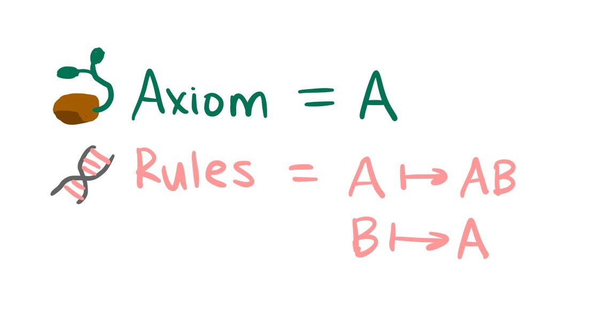

An L-System is a mathematical object which can be used to generate organic looking shapes. To define an L-System, you specify an axiom and rules. An axiom is kind of like a seed which describes what a plant looks like before it begins to grow. You can think of the rules as the plant's DNA which dictates how it changes as it grows. For example, we could have the following L-System:
To "grow" an L-System, we apply the rules to the axiom. Each rule represents a subsitution; wherever we see the character on the left side of a rule, we substitute it for the character or characters on the right side. In our example above, we apply both rules to get:
At each step (or iteration), we apply all the rules we can to obtain a new string. This string becomes our input for the next iteration.
If we continue this process for many iterations, we can end up with very long and/or complex strings, even if our axiom and rules were relatively simple.
But how can we examine the structure of the strings we create? The mess of symbols that we generated in the example above doesn't appear particularly interesting or complex to the eye as it is.
Luckily, there is a way to give this messy string a visual interpretation which reveals its complex structure. In fact, there are many ways of visualizing a string but here is one of them: we will imagine that our string is a set of instructions for a robot illustrator. We will associate each symbol in the string with an instruction to our robot. For example, let's say that "F" means "draw forward." And let's say that "+" means turn left 90 degrees. Now to transform our string into a picture, we simply give it to the robot, who reads it symbol by symbol, following the instructions one at a time. (Those who are familiar with the turtle module in Python might find this method of drawing familiar). When we do this with the string we generated above, this beautiful picture emerges:
Here is an interactive example (if you're curious how I created it, click here) where you can create your own L-System by inputting an axiom and a set of rules. The resulting image will automatically be drawn according to the visual interpretations of each symbol as shown in the table. You can click on the presets to autofill the inputs with some famous examples of L-Systems.
| Symbol | Visual Meaning |
|---|---|
| F | draw forward |
| G | draw forward |
| f | move forward |
| g | move forward |
| L | turn left 90° |
| R | turn right 90° |
| l | turn left 25° |
| r | turn right 25° |
| [ | save position (push) |
| ] | restore position (pop) |